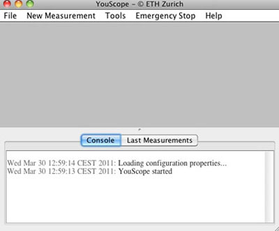

YouScope : Starting YouScope
This page last changed on Jun 01, 2011 by haclaudi.
Starting YouScope
- Windows: YouScope is localized under Start->Programs->YouScope.
- MacOSX: YouScope is localized in Applications->YouScope.
- Linux: The localization of YouScope depends on the distribution.
When YouScope is started a window appears, where the startup parameters have to be defined. In Startup Type and Startup Options, have to be defined.
Startup Options
- In the field Startup Options the path and name of a configuration file has to be chosen, which is created before the first usage of the microscope. The configuration file contains the information which hardware is a part of the microscope, such that YouScope can load and initialize the drivers and configuration presets. The configuration file has to be created specific for each microscope before the first usage. By default the configuration file of the last session is loaded.

Startup Type
- Local connection: If the microscope should be controlled by the computer directly connected to the microscope, the option Start locally has to be selected in Startup Type.
- Remote connection: To contol the microscope remotely from another computer in the network or the internet, the YouScope server has first to be started on the computer connected to the microscope. The option Start microscope server in Startup Type, the port number, as well as a freely choosable password and the location of the *.cfg file in the corresponding fields have to be selected. The YouScope client can then be connected to the server from any computer in the network by starting YouScope on this computer and by selecting the option Connect to microscope server in Startup Type. The port, password and the IP-adress of the microscope computer have to be typed in the corresponding fields.

By clicking on start, the main window appears on the screen. The upper part displays the YouScope interface between the microscopist and the microscope. The lower part can be switched between console with the history of all actions in the current YouScope session, and latest measurements with the history of previous measurements. YouScope is ready to be used.

{kind=link}
{kind=link}
{kind=link}
{kind=link}
{kind=link}